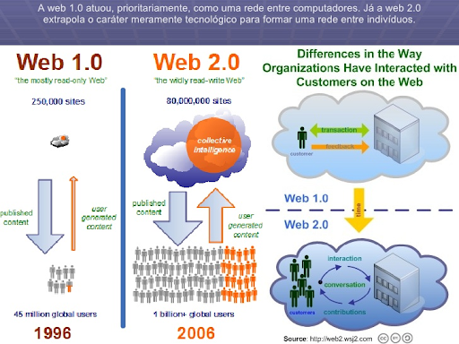
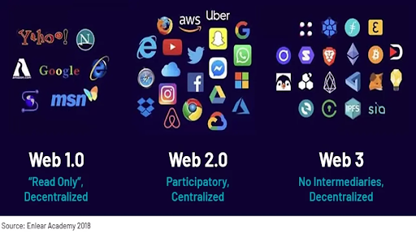
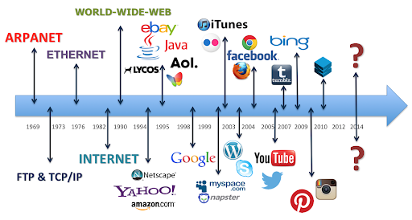
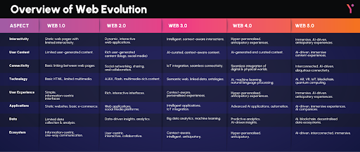

WEB 1.0
A Web 1.0 é a primeira fase da World Wide Web, ativa aproximadamente entre o início da década de 1990 e o começo dos anos 2000. Ela se caracterizava por páginas estáticas, nas quais os usuários apenas consumiam conteúdo sem qualquer tipo de interação. Era conhecida como uma web de “somente leitura”, em que os sites eram criados e mantidos por desenvolvedores ou empresas, e raramente atualizados. O conteúdo era fixo, e a navegação se limitava à leitura de textos e visualização de imagens simples. Tecnologias como HTML básico e hyperlinks predominavam. Não havia login, comentários nem personalização. Era uma internet de mão única, onde o usuário era apenas espectador.
imagem

WEB 2.0
A Web 2.0 surgiu no início dos anos 2000 e marcou uma transformação na forma como os usuários se relacionavam com a internet. Nessa fase, os usuários passaram a ser também produtores de conteúdo. Redes sociais, blogs, fóruns, wikis e plataformas como o YouTube e o Facebook são produtos dessa nova web, mais interativa e colaborativa. O termo foi popularizado por Tim O’Reilly em 2004. Com o uso de tecnologias como AJAX, JavaScript e XML, as páginas passaram a ser dinâmicas, sem necessidade de recarregamento constante. A Web 2.0 é chamada de "web de leitura e escrita", pois permitiu o compartilhamento, comentários e edição de conteúdo em tempo real por qualquer pessoa conectada. 
WEB 3.0
A Web 3.0 representa uma evolução rumo à inteligência das máquinas na internet. Também chamada de Web Semântica, essa fase busca tornar os dados compreensíveis por sistemas, permitindo que softwares “entendam” o conteúdo e ofereçam respostas mais adequadas. Utiliza tecnologias como inteligência artificial, machine learning, dados estruturados, metadados e ontologias. Um dos principais objetivos da Web 3.0 é personalizar a experiência do usuário com base em suas preferências e comportamentos. A descentralização é outro pilar fundamental, sendo impulsionada pelo uso de blockchain, o que aumenta a segurança e o controle dos dados pelos próprios usuários.

WEB 4.0
A Web 4.0 ainda é um conceito em desenvolvimento, mas já é discutida como a próxima etapa da internet. Ela propõe uma integração total entre humanos e máquinas, com sistemas capazes de agir de forma autônoma e preditiva. É conhecida também como web ubíqua ou web inteligente, onde dispositivos estarão constantemente conectados, interpretando dados e fornecendo respostas imediatas. A Web 4.0 faz uso intensivo da inteligência artificial, da Internet das Coisas (IoT), do big data e da computação em nuvem. Espera-se que essa web ofereça uma experiência cada vez mais imersiva, intuitiva e personalizada, promovendo uma simbiose entre o ser humano e a tecnologia.
